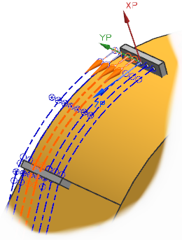
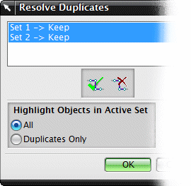

处理重复
当您重复复制管线中的现有路径时，会发生什么？
无论是变换路径还是平行偏置路径对话框，检查重复选项都会在您创建路径时分析它们。
当您重复复制现有路径时，检查重复将会高亮显示视图中的重复路径集合，然后打开处理重复部分对话框，其中列出了所有的重复集合。
|
 |
 |
要处理此问题，在列表中选择一个或多个重复的集合，然后点击保持集 或者删除集  。
。
删除集将从您的部件中移除其中一条重复的管线。